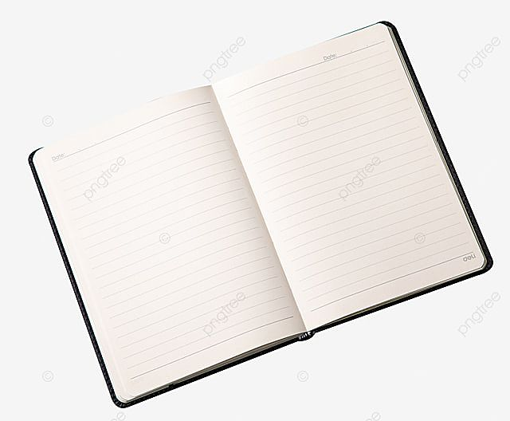

Kodu
Map area kasutamine
Miks on päevik kasulik?
Tööpäeviku pidamine on võimas vahend, mis aitab kiirendada karjääri arengut, suurendada isiklikku tõhusust ja vähendada stressi. See muudab igapäevaste ülesannete kaootilise voo struktureeritud kogemuseks.
